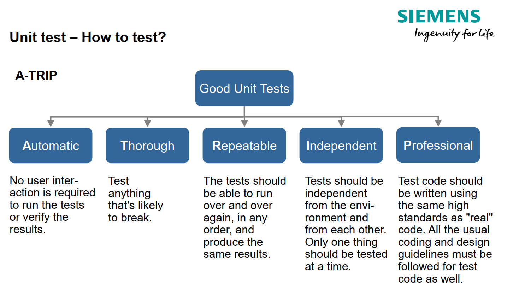

Unit Testing
Unit Testing (unit testing) is the fundamental and lowest level of software verification in the testing pyramid. Its primary objective is to verify the correctness, completeness, robustness, and structural coverage of the smallest independently testable parts of source code (units/components) in isolation from the surrounding environment and external dependencies.
From a software architecture perspective, unit testing is a crucial indicator of design quality. Code that can be easily tested at the unit level exhibits low coupling (low coupling), high cohesion (high cohesion), and explicit dependency management. In industrial and safety-critical systems (e.g., automotive control units according to the ISO 26262 (ASIL A–D) standard or the AUTOMOTIVE SPICE – SWE.4 process model), unit testing is a normative requirement associated with bidirectional traceability (traceability) and strict measurement of structural coverage (Statement, Branch/Decision, MC/DC).

#Definitions and basic concepts
#1. Software unit (Software Unit / CUT / SUT)
- Definition: The smallest independently tested software element, characterized by its functional unambiguity (e.g., a single function, method, or standalone class).
- Significance in architecture: Determines the encapsulation boundary and atomic granularity of a module in a layered or component-based architecture.
- Significance in testing: Represents the object directly under test (System Under Test – SUT / Code Under Test – CUT), to which the specified inputs and expected outputs relate.
- Typical mistake / misconception: Incorrectly assuming that a unit must always correspond strictly to a single class or function; overlooking the difference between a solitary (isolated) and a sociable (sociable) unit.
- Example from embedded/industrial systems: In an embedded brake system control module (C/C++), the unit is a function calculating corrected braking torque based on input data from an ABS sensor.
#2. Test double (Test Double: Stub, Mock, Spy, Fake)
- Definition: A substitute object or function that replaces the real dependencies of the SUT (Depended-on Components – DOC) to control indirect inputs and verify indirect outputs.
- Significance in architecture: Enforces architecture based on interfaces (Interfaces) and patterns such as Dependency Injection (DI) or Humble Object.
- Significance in testing: Ensures that the test is isolated from slow, unstable, or hard-to-access dependencies (databases, CAN/LIN command buses, physical sensors).
- Typical mistake / misconception: Over-mocking – excessive creation of mocks even for internal data structures, leading to tests coupled to the internal implementation instead of behavior and to their breaking during refactoring.
- Example from embedded/industrial systems: Using a Stub to simulate reading a temperature from a physical ADC converter and a Mock to evaluate whether the function for activating the cooling fan was called correctly when the limit was exceeded.
#3. Structural code coverage (Structural Code Coverage)
- Definition: A White-Box analysis methodology that measures the percentage of source code executed during a test suite run (statements, branches, MC/DC).
- Significance in architecture: The architecture must support the execution of instrumented (instrumented) code and data collection without failures due to insufficient memory or disruption of real-time timing.
- Significance in testing: Serves as a formal exit criterion (Exit Criteria). In safety software (ASIL D), 100% MC/DC (Modified Condition / Decision Coverage) is strictly required.
- Typical mistake / misconception: Treating 100% code coverage as proof of the absence of errors. Code coverage only indicates which code was executed, but does not reveal missing requirements or guarantee the correctness of the logic.
#4. Test-Driven Development (TDD)
- Definition: A software development methodology following an iterative Red-Green-Refactor cycle, in which the test is written before the production implementation itself.
- Significance in architecture: Serves primarily as an architectural design tool (Test-Driven Design) that naturally eliminates unnecessary code and enforces modularity.
- Significance in testing: Provides immediate feedback and ensures high regression test coverage from the beginning of development.
- Typical mistake / misconception: Viewing TDD as a verification testing technique performed only after the code has been written.
#5. Execution environment: Host vs. Target Execution
- Definition: Running unit tests in the development computing system / CI environment (Host) vs. running them on a real microcontroller or target simulator (Target).
- Significance in architecture: Requires a clear separation of application logic from hardware-dependent code through abstraction (HAL).
- Significance in testing: Host tests are fast and enable extensive automation; Target tests verify compiler specifics, endianness, memory alignment, and type overflow.
- Typical mistake / misconception: Neglecting testing in the Target environment and relying exclusively on Host tests, which can hide errors caused by compiler optimizations or the target architecture's data types.
#Common mistakes and anti-patterns
#Architecture mistakes
- Tight coupling to infrastructure and static dependencies:
- Why it is a problem: Using global variables, static methods, or the Singleton pattern makes it impossible to isolate the unit and substitute test doubles.
- How it manifests: Tests require complex initialization of the entire system or fail because of shared state between tests.
- How to prevent it: Apply Dependency Injection (DI) patterns and interfaces; use refactoring to a Humble Object.
#Requirements mistakes
- Absence of testability parameters in requirements:
- Why it is a problem: Requirements do not contain defined limits, tolerances, or behavior in error states (robustness).
- How it manifests: Developers cannot unambiguously define acceptance criteria for unit tests (Pass/Fail).
- How to prevent it: Check the testability of requirements before development begins (UTS/SRS review according to ASPICE SWE.4).
#Test strategy mistakes
- Incorrect order of techniques (skipping Black-Box testing):
- Why it is a problem: Writing unit tests exclusively based on internal code (White-Box) without first verifying functional requirements.
- How it manifests: The code achieves high coverage but does not implement the required business logic or fails on invalid inputs.
- How to prevent it: Follow the rule: first create Black-Box tests (equivalence classes, boundary values) to achieve functional coverage, and only then add White-Box tests for missing structural coverage.
#Automation mistakes
- Testing implementation details (Coupled Tests / Overspecified Software):
- Why it is a problem: Tests verify internal private method calls instead of the public interface and resulting state.
- How it manifests: Any code refactoring (without changing functionality) causes widespread test failures.
- How to prevent it: Focus tests on the public interface (API) and observable behavior; prefer real implementations (sociable tests) where this is effective.
#Mistakes in interpreting testability
- Confusing testability with bypassing encapsulation:
- Why it is a problem: Changing access modifiers (from private to public) or inserting production macro directives solely for tests.
- How it manifests: Degradation of the architecture and violation of production code encapsulation.
- How to prevent it: Test private methods through the public API, or extract the logic into a separate testable class.
#Mistakes in communication between architects, developers, and testers
- Absence of a traceability matrix (Traceability):
- Why it is a problem: An unclear link between architectural detail (DDD/CDD), requirements, and test cases.
- How it manifests: An inability to demonstrate to an auditor that all requirements have been tested at the unit level.
- How to prevent it: Introduce bidirectional traceability in tools (SRTM / ALM) in accordance with ASPICE SWE.4.
#Exam questions
#1. Basic levels
- Question: How is a software unit defined, and what are the main objectives of unit testing in process models such as ASPICE?
- Content of a good answer: Definition of a unit (function, method, class). Objectives: verification of correctness, completeness with respect to the detailed design (DDD), robustness, Absence of unidentified functionality, and achievement of structural coverage.
#2. Intermediate
- Question: What is the difference between solitary and sociable unit tests, and what impact does the choice between them have on software refactoring?
- Content of a good answer: Solitary strictly isolates the SUT using test doubles (stubs/mocks). Sociable uses real neighboring classes if they do not perform I/O. Solitary can lead to excessive coupling of tests to the implementation (overspecified tests), while sociable supports safer refactoring.
#3. Advanced
- Question: How is code coverage measurement approached in safety-critical development (ISO 26262 ASIL D), and what obstacles does code instrumentation introduce?
- Content of a good answer: A requirement for 100% MC/DC coverage. The answer must mention the need to run tests without instrumentation (to verify actual behavior) and subsequently with instrumentation (to measure coverage). An explanation of the risks associated with memory size and timing on the Target.
#4. Practical experience
- Question: How would you modify the architecture of a legacy C/C++ module full of global variables to make it unit-testable without risking a break in production?
- Content of a good answer: Use refactoring patterns: Extract Interface, create wrapper structures, introduce Test Hooks as a transitional strategy, or use the Humble Object pattern to isolate hardware dependencies.
#5. Trade-off decisions
- Question: What are the advantages and disadvantages of running unit tests in the Host (PC) environment compared with the Target environment (real hardware)?
- Content of a good answer: The Host offers extreme speed, easy CI/CD integration, and the availability of powerful mocking frameworks. The Target verifies code compiled by the real compiler with real optimizations, addresses type overflow, endianness, and memory constraints, but is slow and requires costly infrastructure.
#Model exam answer
As a software architect, I view Unit Testing not merely as a testing technique, but as a key architectural litmus test of design quality.
Definition and scope: A software unit is the smallest independently tested element of a software system – typically a class or method in the object-oriented world, or an individual function in procedural C programming. Unit testing verifies this unit in isolation from surrounding components and external systems. In process standards such as AUTOMOTIVE SPICE SWE.4 or ISO 26262, the objective of unit tests is to demonstrate that the code precisely matches the detailed design (DDD), exhibits robustness with invalid inputs, and achieves the specified structural coverage.
Significance for architecture: From an architectural perspective, unit tests cannot be written in isolation if the architecture does not support testability (Design for Testability). Code that uses static dependencies, global state, or tightly coupled instantiations cannot be unit-tested. To enable unit testing, we must apply principles such as Separation of Concerns, Dependency Inversion, and design patterns such as Humble Object or Adapter in the architecture. Under the pressure to ensure testability, the architecture therefore naturally moves toward a modular, loosely coupled design.
Significance for testing and methodology: In the test strategy, we must strictly separate two steps. The first is Black-Box testing based on the requirements specification – here we use equivalence classes and boundary values. Only in the second step does White-Box testing come in, through which we add test cases to achieve the required structural coverage, for example Statement, Branch, or the critical MC/DC coverage at the highest safety levels, ASIL D.
Practical example from embedded practice: Imagine the development of an electric motor control module [(general addition based on the industrial context)]. The application logic for calculating the required rotational speed is completely separated from the inverter drivers and the CAN bus. For unit tests of the application logic, we replace the CAN bus interface with a Test Double (e.g., a Stub). This allows us to verify the mathematical calculation and response to boundary states within milliseconds without having to connect physical hardware.
Architectural Trade-off: Here we reach a fundamental decision: Host vs. Target execution and Solitary vs. Sociable tests.
- If we test exclusively in Solitary mode with extensive use of Mocks, there is a risk of what is known as Overspecified Software – tests verify internal dependency calls instead of the resulting behavior and fail extensively during refactoring. We therefore prefer Sociable tests for domain objects that have no I/O side effects.
- The second trade-off is that testing on the Host (PC) is extremely fast in the CI/CD pipeline, but does not reveal errors specific to the target compiler, data type sizes, or memory alignment. A proper test strategy therefore combines extensive daily unit test execution on the Host with periodic verification of a representative suite on a real/simulated Target.
Summary: Unit testing is not an isolated developer activity, but a fundamental pillar of software architecture quality. Without a well-designed architecture, effective unit tests cannot be written, and without unit tests, the architecture cannot be safely refactored.”
#Short version for quick revision
#5 main points
- A unit test verifies the smallest part of the code (a unit) in isolation from its surroundings.
- Code testability requires low coupling (low coupling) and explicit dependency management (DI).
- Tests are first designed as Black-Box tests (functional requirements) and only then supplemented with White-Box tests (structural coverage).
- In safety-critical systems (ASIL D), 100% MC/DC structural coverage is mandatory.
- Testing implementation details (over-mocking) leads to brittle tests that hinder refactoring.
#5 key concepts
- SUT / CUT: System / Code Under Test – the object directly under test.
- Test Double: A substitute object (Stub, Mock, Spy, Fake) for isolating the SUT.
- MC/DC: Modified Condition / Decision Coverage – coverage of logical conditions required by safety standards.
- Humble Object: A design pattern separating testable logic from an untestable environment.
- Traceability (SRTM): Bidirectional traceability between the requirement, design, and test cable.
#5 typical exam questions
- What is the difference between a unit test and an integration test in terms of the SUT and isolation?
- Why is 100% statement coverage (Statement Coverage) insufficient for safety code?
- What is the Over-mocking anti-pattern, and what are its consequences?
- How does the Dependency Injection design pattern support testability?
- What is the difference in the behavior of a unit test run on a Host development PC vs. a Target MCU?
#3 most common mistakes
- Writing unit tests coupled to the internal implementation instead of the public interface.
- Replacing architectural design with bypassing encapsulation (exposing private methods).
- Relying on 100% code coverage without verifying boundary and invalid states (robustness).
#1 concise model sentence for the exam
“Unit testing verifies the smallest software components in isolation, serving as a fundamental indicator of a high-quality, loosely coupled architecture and, in safety-critical software, guaranteeing both correctness and structural code coverage according to normative requirements.”
#Learning Outcome
In accordance with the requirements of Learning and Practice Outcomes (LOPO) – testing and the ASPICE SWE.4 process standard:
- Architectural insight: The architect understands the role of unit tests in the testing pyramid and can justify why isolated testing is the cheapest tool for catching defects.
- Assessing testability: The architect can identify architectural blockers to testability (spaghetti code, hidden dependencies) and apply patterns to remove them (DI, Humble Object, Facade).
- Deciding on a test strategy: The development/test architect can establish a balanced strategy combining Black-Box and White-Box techniques, determine appropriate exit criteria (Statement, MC/DC) according to the level of risk/ASIL, and correctly choose the balance between Host and Target test execution.
#Summary in one table
| Area | What is important | Relationship to architecture | Relationship to testing | Typical exam question |
|---|---|---|---|---|
| Isolation & SUT | Precise definition of the boundaries of the unit under test and isolation from its surroundings. | Enforces interfaces, modularity, and dependency management patterns (DI). | Enables fast, repeatable, and deterministic test execution. | What is the difference between a solitary and a sociable unit test? |
| Test Doubles | Using the appropriate type of substitute (Stub, Mock, Fake, Spy). | Requires interfaces (Interfaces) and separation of I/O from logic. | Ensures control over indirect inputs and verification of outputs. | When is it appropriate to use a Mock, and when a real class (Fake/Real)? |
| Structural coverage | Measuring code execution (Statement, Decision, MC/DC). | Requires support for code instrumentation in the build toolchain. | Serves as Exit Criteria for verifying test completeness. | Why does 100% Statement Coverage not guarantee safety (ASIL D)? |
| Testability Design | Modifying code to facilitate testing without breaking encapsulation. | Applying the Humble Object, Adapter, and Separated Interface patterns. | Eliminates the need for complex and brittle test fixtures. | How can legacy C code with Singletons be refactored for unit testing? |
| Host vs. Target | Choosing an environment for running unit tests. | Requires a hardware abstraction layer (HAL) in the architecture. | Balances the speed of feedback in CI against Target fidelity. | What errors will a unit test run exclusively on a PC (Host) fail to detect? |